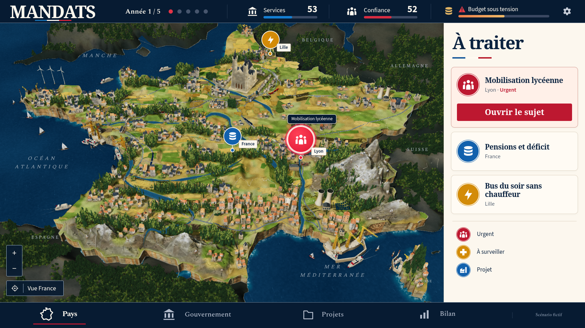
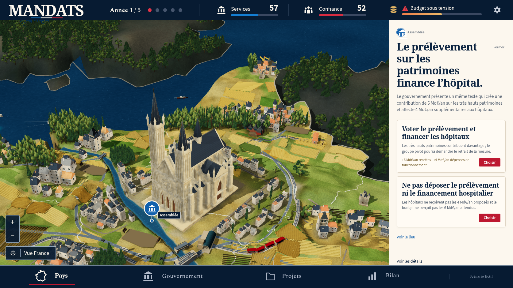
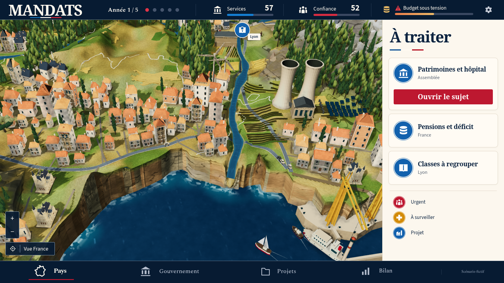
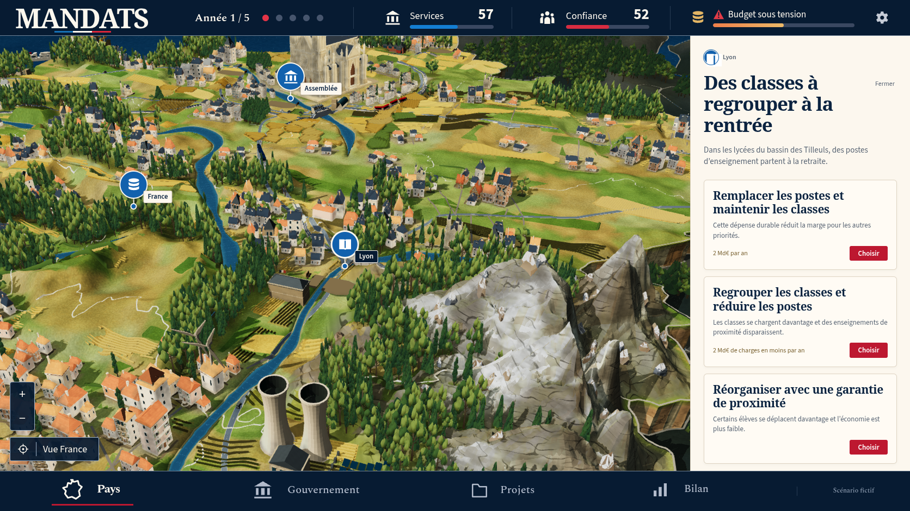
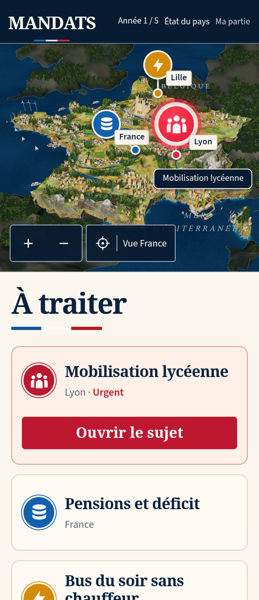
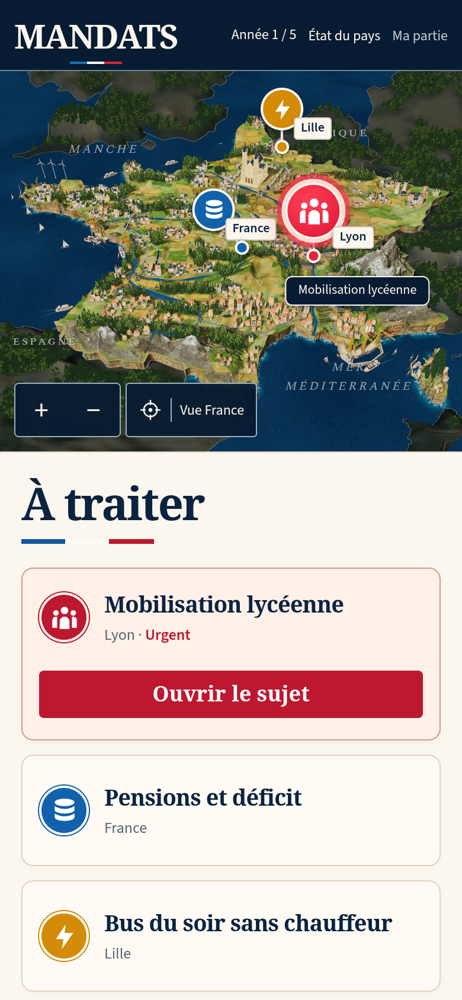

MANDATS — comparaison 42
La miniature reste en dessous de la référence. La reconstruction et les contrôles complets continuent. La PR reste en brouillon.
La capture de jeu montre une véritable décision scolaire : année 1, services 53, confiance 52 et mobilisation lycéenne. Le scénario fictif de la référence n’a pas été injecté dans la partie.


Référence canonique.Production 42, obtenue avec les contrôles du jeu.
| Partie | Modification réelle | Écart encore visible |
|---|
| Relief | Variations sur les sommets partagés, fractures plus grises, neiges localisées, crête pyrénéenne intérieure relevée. Pente alpine maximale mesurée : 6,922. | Masses et plans rocheux trop grands ; crêtes moins fines que la référence. |
| Rivages | Subdivision des faces hautes selon leur longueur en 3D ; fractures et joints plus marqués. Sept ports et 34 bateaux, avec gabarits propres aux ports du Nord. | Falaises trop régulières et raccord du fleuve à la mer trop abrupt. |
| Bourgs et bois | 782 maisons réellement acceptées, vingt en Corse. Couvert plus olive, variation de hauteur et bois anglais complétés. | Façades simples, silhouettes répétitives et végétation moins naturelle que la miniature de référence. |

Assemblée puis « Voir le lieu ». Les façades de la cathédrale et des maisons demandent encore du travail.
Déplacement natif et zoom vers le rivage sud. Le contact entre le fleuve, la falaise et la mer reste à corriger.
Inspection de Lyon puis un clic sur « Réduire la carte ». La géométrie rocheuse et l’enneigement restent moins fins que la référence.

320 × 740, DPR 2, framebuffer 640 × 562 ; véritable choix scolaire.
390 × 844, DPR 2, framebuffer 780 × 642. Aucun débordement horizontal.Preuves et limites
Dix captures natives de production contrôlent zéro erreur de page, de console, de requête et HTTP. Leurs réponses JS/CSS correspondent aux fichiers du build conservé. Aucun état, caméra, modèle ou choix de détail n’est forcé. Les 80 926 relevés physiques des pieds d’arbres conservent exactement les hauteurs de l’ancien index. Le terrain retenu est reproduit octet par octet ; le terrain intermédiaire a changé localement lors du retrait de deux parcelles corses refusées.
Le check complet passe 1 082 tests, trois cibles TypeScript, le build, le pré-rendu et le précache. Deux tests DPR originaux passent sur ordinateur et WebKit. Quatre parcours originaux de démarrage v12 et d’importation, export et reprise v9 passent sur téléphone et ordinateur. Les suites complètes rework, social, header, mandats, board et story restent à vérifier sur la version finalement retenue. Aucun test, délai, retry ou worker n’a été modifié.
La CI précédente d964ee6 échoue encore dans rework sur une reprise WebKit après 15s, et dans site sur deux parcours de démarrage/reprise. Les traces conservent de longues attentes de rendu, de rechargement et de fermeture de contexte. Les contrôles locaux ciblés ne remplacent pas la CI de cette version. SwiftShader ne permet pas de certifier la fluidité d’un appareil physique. La conformité artistique reste à atteindre.
Manifeste · Captures natives · Build servi · Contrôles DPR originaux · Quatre parcours ciblés · Contacts des arbres · Emprises portuaires · CI précédente · Comparaison 41